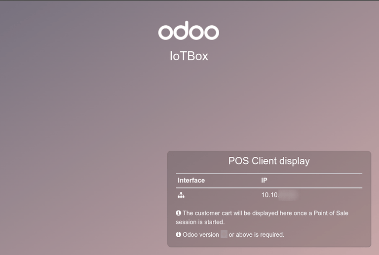

Conectar una pantalla¶
En Odoo, la Caja IoT se puede conectar a una pantalla. Después de configurarla, la pantalla se puede usar para mostrarle un Punto de Venta (PdV) al cliente.

Ejemplo de una orden de PdV (punto de venta) en una pantalla.¶
Acceda a la visualización del cliente en la página de inicio de la Caja IoT y haga clic en el botón Pantalla del PdV. Para ir a la página de inicio de la Caja IoT , vaya a la aplicación y haga clic en el enlace de la página de inicio de la Caja IoT.
Conexión¶
La forma de conexión entre la pantalla y la Caja IoT depende del modelo.
Conecte hasta dos pantallas con cables micro-HDMI en un lado de la Caja IoT. Si ambas pantallas están conectadas, pueden mostrar contenido diferente (consulte el Uso de Pantalla).
Conecte la pantalla con un cable HDMI en un lado de la Caja IoT.
Ver también
Importante
Las pantallas deben estar conectadas antes de encender la Caja IoT. Si ya está encendida, conecte las pantallas y reinicie la Caja IoT desconectándola por diez segundos y conectándola de nuevo a la fuente de energía.
Advertencia
El uso de adaptadores HDMI/micro-HDMI puede ocasionar problemas que resultan en una pantalla negra sin información. Se recomienda usar el cable específico para la conexión de la pantalla.
Si la conexión tuvo éxito, la pantalla debe mostrar la pantalla de cliente de PdV.
La pantalla también debe aparecer en la lista de Pantallas en la página de inicio de la Caja IoT. También puede acceder a la pantalla en la aplicación .

Nota
Si no se detecta ninguna pantalla, aparecerá una pantalla predeterminada llamada Pantalla distante. Esto indica que no hay ningún hardware de pantalla conectado.

Uso¶
Mostrar órdenes del Punto de Venta a los clientes¶
Para usar la pantalla en la aplicación de Punto de venta, vaya a , seleccione un PdV, haga clic en Editar si es necesario y active la función de Caja IoT.
Luego, seleccione la pantalla desde el menú desplegable de Pantalla del cliente. Luego haga clic en Guardar.

La pantalla ahora está disponible para las sesiones del PdV. Aparecerá un icono de pantalla en el menú de la parte superior de la pantalla para indicar el estado de conexión de la pantalla.
La pantalla mostrará automáticamente las órdenes del PdV y actualizarla cuando se hagan cambios a la orden.
Mostrar un sitio web en la pantalla¶
Abra la vista de formulario en la aplicación . Esto le permite al usuario escoger una URL de sitio web específica para que aparezca en la pantalla usando el campo Mostrar URL.